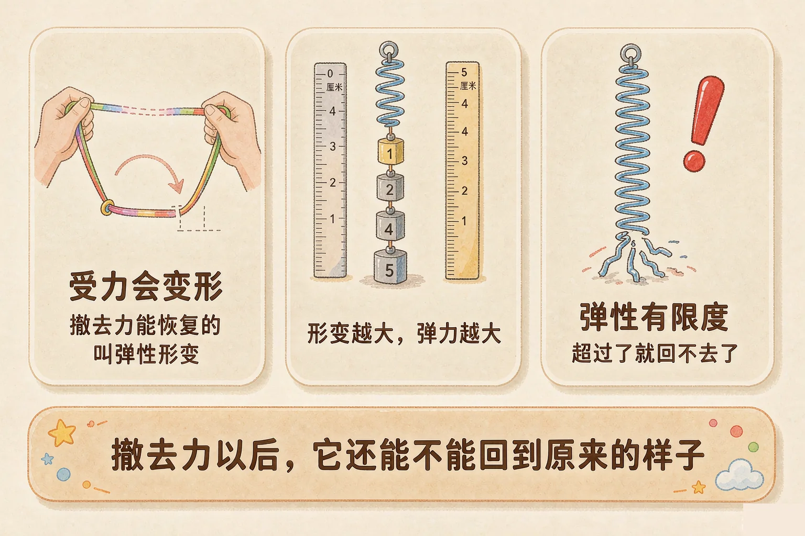
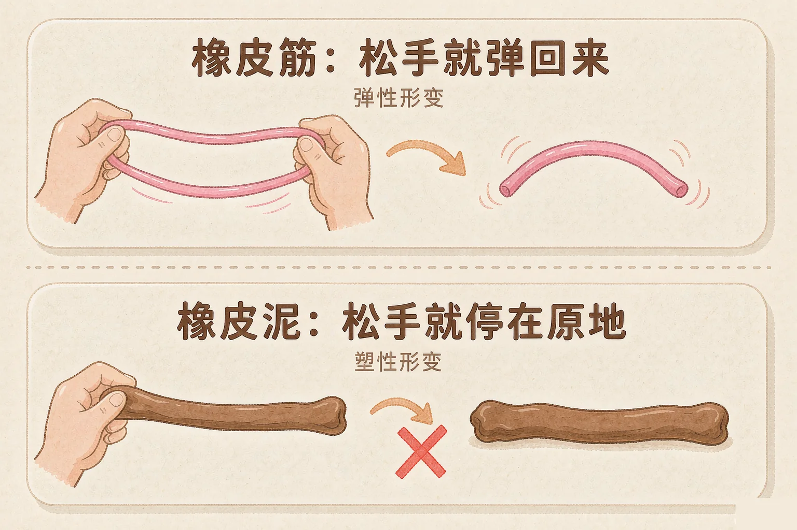
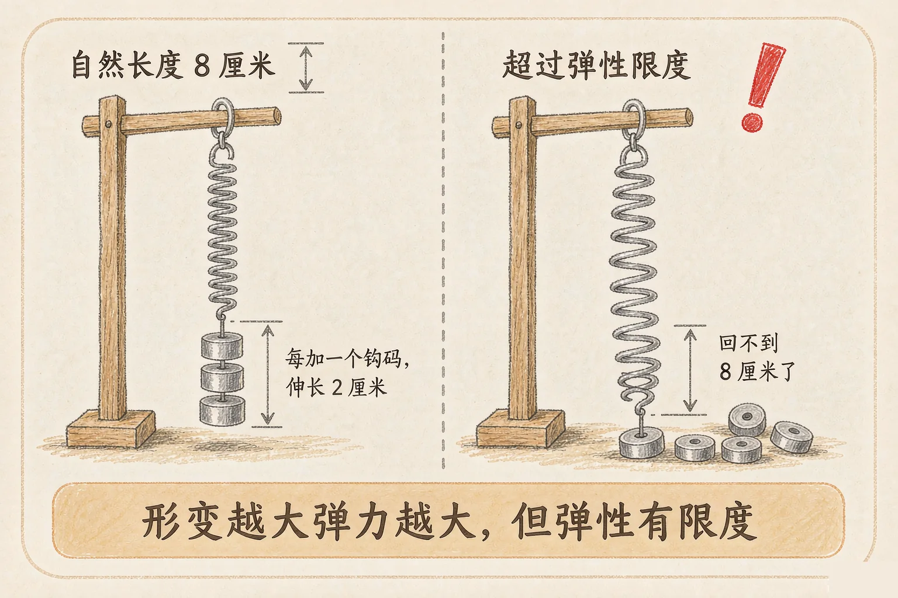

Gallery
v1.0.0 · skill v7.22.0
小学五年级 · 物质科学 · 力
橡皮筋一松手就弹回来，橡皮泥一松手就不动——差别在哪里？

选一个你真正好奇的问题，后面的实验都会围着它转。
选择或输入后，这节课会围绕你的问题展开。
先凭直觉选一个，选完立刻看到解释——错了也没关系，正好知道要重点听哪里。
1. 把一根橡皮筋拉长，松手后它会怎样？
橡皮筋撤去力以后能恢复原状，属于弹性形变。错因提醒：常见错误是把橡皮筋和橡皮泥搞混——橡皮泥松手后回不去，橡皮筋能回去。
2. 下面哪种变化是塑性形变？
橡皮泥捏过之后停在新的形状上，撤去力回不去，是塑性形变。错因提醒：判断依据只有一条——撤去力以后能不能恢复原状，不要看它变形大不大。
3. 用弹簧测力计测量时，为什么不能挂太重的物体？
弹簧的伸长量只在弹性限度以内才和力的大小对应。错因提醒：很多同学误认为弹簧能无限拉长，其实超过限度它就回不去了。
你已经知道力可以推东西、拉东西。但有一个问题还没弄明白：为什么有的东西被拉长以后，一松手就弹回来，有的却停在原地不动？答案在材料本身上。
弹性形变
受力时形状改变，撤去力以后能恢复原状。例：弹簧、橡皮筋、跳跳床、弓。
塑性形变
受力时形状改变，撤去力以后回不到原来的样子。例：橡皮泥、面团、被揉皱的纸。

🔍 深层理解 换个角度再看一遍这件事，看看能不能说出背后的原理。
看见它：弹簧被压短、橡皮筋被拉长、弓臂被拉开——这些「变了形但还想回去」的状态，就是弹性形变的现场。
解释它：为什么它能弹回来？因为材料内部的粒子被挤开或拉开以后，会像一群想回到原位的小朋友一样往回挤，这个往回挤的力就是弹力。
比较它：弹性形变和塑性形变的差别不在「变形多大」，而在「撤去力以后回不回得去」。橡皮筋拉一点点也会回去，橡皮泥拉一点点也回不去。
每挂一个钩码，看一看弹簧伸长了多少。挂到第 6 个的时候，再点一下「松手」。
弹簧现在的自然长度是 8 厘米，还没有受力。点下面的按钮，给它挂上钩码。
刚才的实验告诉我们两句话。第一句：形变越大，弹力越大。第二句：弹簧不可能无限拉长，超过了限度就回不去了。

很多同学误认为「弹力是物体本来就有的」。其实弹力只有在物体发生弹性形变的时候才会出现，而且形变越大，弹力越大；没有形变，就没有弹力。
选一个物品，先拉一拉，再松手。看看它能不能回到原来的样子，然后放进对应的筐里。
先选一个物品，拉一拉，再松手。
题目：把 1 个钩码挂在弹簧下面，弹簧伸长 2 厘米；挂 3 个同样的钩码，弹簧伸长 6 厘米。为什么弹簧测力计可以量出力的大小？
说「弹簧本来就有一股力」是不对的。弹力只在发生弹性形变的时候才出现。没有形变，就没有弹力；形变撤去，弹力也跟着消失。
先凭直觉选一个，选完立刻看到解释——错了也没关系，正好知道要重点听哪里。
1. 关于弹力，下面哪句话是对的？
弹力来自弹性形变的恢复过程，形变越大弹力越大。错因提醒：常见错误是误认为弹力是物体自带的，忽略了它必须由形变产生。
2. 把一根弹簧拉到超过弹性限度，会怎样？
超过限度弹簧就被拉坏了，只能恢复一部分。错因提醒：不少同学认为弹簧可以无限拉长，所以用弹簧测力计时随手超量程，这是要避免的。
3. 把橡皮泥捏成一只小动物，这个变化属于：
橡皮泥捏过以后停在新形状上，回不去原来的样子，是塑性形变。错因提醒：不要把「形状变了」和「有弹力」搞混，关键要看撤去力以后回不回得来。
先点一张现象卡片，再点你认为正确的筐。每放一次都会立刻告诉你理由。
点一张卡片开始判断。
再想一想：你自己设计的弹力装置里，是哪个部分发生了弹性形变？把它的名字写下来。
先凭直觉选一个，选完立刻看到解释——错了也没关系，正好知道要重点听哪里。
1. 汽车的减震器里装着弹簧，它的主要作用是：
路面颠簸时弹簧被压缩，弹性形变恢复时把冲击化解掉，所以坐在车里会稳一些。
2. 撑杆跳运动员把杆压弯后弹起来，这个过程中：
撑杆被压弯是弹性形变，恢复时产生的弹力把运动员推向上方。形变越大，弹力越大。
3. 用弹簧测力计测量一个 8 牛的力，但它的量程只有 5 牛。正确的做法是：
超过弹性限度会把弹簧拉坏，读数也不准。所以必须换成量程合适的测力计。
回到开头那两样东西：橡皮筋松手能缩回去，因为它发生的是弹性形变，恢复时产生了弹力；橡皮泥松手停在原地，因为它发生的是塑性形变，不产生弹力。跳跳床能把你弹起来，也是同一个道理——床面被压下，恢复时把弹力还给了你。
打个比方记住它：弹性形变就像被人挤开的小朋友，一放手就想挤回自己的位置，这个往回挤的劲就是弹力。塑性形变就像大家重新排了一次队，位置定下来就不动了。
三层练习，做完第一、二层就算通关；第三层留给愿意继续探索的同学。
⭐ 基础巩固（必做）
⭐⭐ 能力应用（必做）
⭐⭐⭐ 迁移挑战（选做）
左边是学它之前要先会的，右边是学会之后可以继续探索的，下面是同一领域的伙伴知识。
图谱正在加载：首次进入需下载知识索引（约 1–3 秒），加载完成后本行会自动消失。